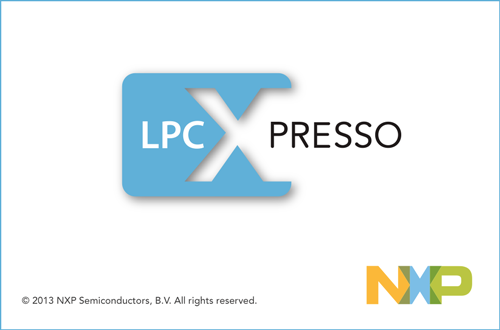
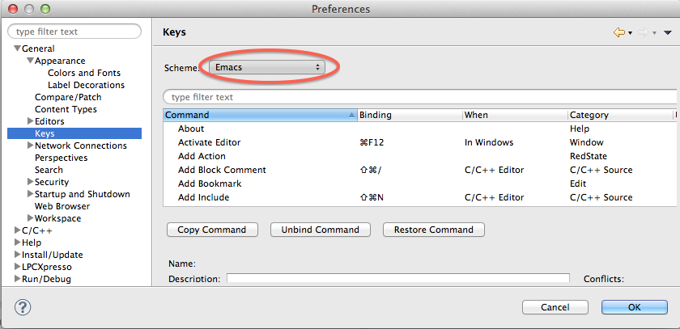

情報処理応用 ー Robocar Programming
LPCXpresso

フォントサイズの調整
- preference メニューを見つける。
- 左サイドのメニューから、
General > Appearance > Colors and Fonts を選択。
- 右サイドのメニューから、
C/C++ > C/C++ Editor Text Font を選択。
- Editボタンを押し、固定幅フォントの14ポイント以上を選択。
- Apply ボタン、OK ボタンを押して選択を反映、確定させる
(図はMacOSXのものです)。
メニューの探索
- LPCXpresso のメニューのどこかに、Correct Indentation メニューがある。
これは字下げを整えるメニューです。知っていると重宝する。
どこにあるか、探し当てて、覚えておくこと。
- ビルドボタン
 、
ランボタンはどこにあるか?
、
ランボタンはどこにあるか?
- 新しくプロジェクトを作るためのメニュー
- プロジェクトの名前を変更するメニュー
- 既存プロジェクトに新しいソースファイルを追加するメニュー
- ソースファイル名を変更するメニュー
- 既存プロジェクト(zip圧縮)を取り込むメニュー
キーバインディングの調整
emacs ができる受講生は、同じく Preference から
General > Keys で Emacs を選択するとよい。

back